Building Structured and User-Defined Models Using System Identification Toolbox™
In this demo we shall demonstrate how to use utilities in System Identification Toolbox™ to estimate parameters in user-defined model structures. Such structures are specified by IDPROC (transfer function), IDGREY (state-space) or IDNLGREY models. Here, we shall consider linear models (IDPROC, IDGREY) only. We shall investigate how to assign structure, fix parameters and create dependencies among them.
Contents
Experiment Data
We shall investigate data produced by a (simulated) dc-motor. We first load the data:
load dcmdata
who
Your variables are: text u y
The matrix y contains the two outputs: y1 is the angular position of the motor shaft and y2 is the angular velocity. There are 400 data samples and the sampling interval is 0.1 seconds. The input is contained in the vector u. It is the input voltage to the motor.
z = iddata(y,u,0.1); % The IDDATA object z.InputName = 'Voltage'; z.OutputName = {'Angle';'AngVel'}; plot(z(:,1,:))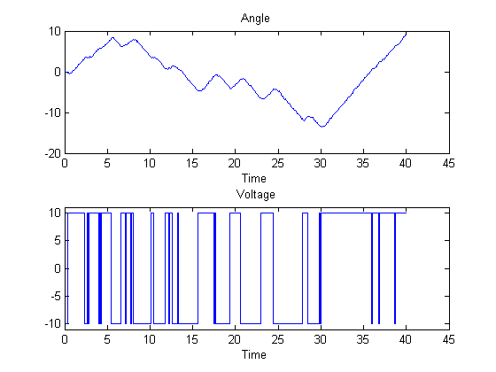
Figure: Measurement Data: Voltage to Angle
plot(z(:,2,:))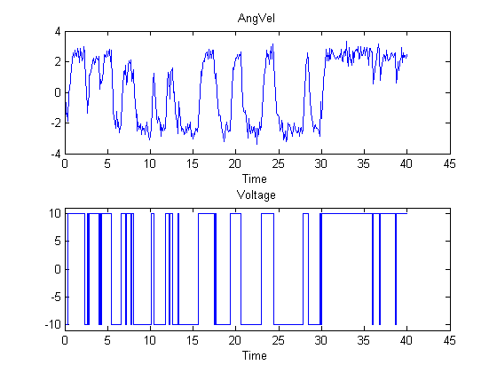
Figure: Measurement Data: Voltage to Angle
Model Structure Selection
We shall build a model of the dc-motor. The dynamics of the motor is well known. If we choose x1 as the angular position and x2 as the angular velocity it is easy to set up a state-space model of the following character neglecting disturbances: (see Example 4.1 in Ljung(1999):
| 0 1 | | 0 |
d/dt x = | | x + | | u
| 0 -th1 | | th2 | | 1 0 |
y = | | x
| 0 1 |The parameter th1 is here the inverse time-constant of the motor and th2 is such that th2/th1 is the static gain from input to the angular velocity. (See Ljung(1987) for how th1 and th2 relate to the physical parameters of the motor). We shall estimate these two parameters from the observed data. The model structure (parameterized state space) described above can be represented in MATLAB® using IDSS and IDGREY objects. These objects let you perform estimation of parameters using experimental data.
Specification of Free (Independent) Parameters Using IDSS Models
IDSS models represent state-space models. The structure in terms of the general description:
d/dt x = A x + B u + K e
y = C x + D u + e
The parameters of the model are the system matrices - A, B, C, D and K and the initial state values X0. With IDSS objects, you have the option of specifying which elements of the system matrices are fixed to known values, and which are to be estimated. This specification is performed using "structure matrices" As, Bs, Cs, Ds, Ks and X0s. Any parameter to be estimated is entered as NaN (Not a Number).
Thus we have the following structure matrices:
As = [0 1; 0 NaN]; Bs = [0; NaN]; Cs = [1 0; 0 1]; Ds = [0; 0]; Ks = [0 0;0 0]; X0s = [0;0]; % X0 is the initial value of the state vector; it could also be % entered as parameters to be identified.
We shall produce an initial guess for the parameters marked with NaN above. Let us guess that the time constant is one second and that the static gain is 0.28. This gives:
A = [0 1; 0 -1]; %initial guess for A(2,2) is -1 B = [0; 0.28]; %initial guess for B(2) is 0.28 C = eye(2); % C is completely fixed by Cs. Hence C = Cs. D = zeros(2,1); % D is completely fixed by Ds. Hence D = Ds.
The nominal model can now defined using idss as follows:
ms = idss(A,B,C,D);
To define the "structure", i.e., which parameters to estimate:
setstruc(ms,As,Bs,Cs,Ds,Ks,X0s); set(ms,'Ts',0) % This defines the model to be continuous (Sampling interval 0) ms % Initial model
State-space model: dx/dt = A x(t) + B u(t) + K e(t)
y(t) = C x(t) + D u(t) + e(t)
A =
x1 x2
x1 0 1
x2 0 -1
B =
u1
x1 0
x2 0.28
C =
x1 x2
y1 1 0
y2 0 1
D =
u1
y1 0
y2 0
K =
y1 y2
x1 0 0
x2 0 0
x(0) =
x1 0
x2 0
This model was not estimated from data.
Estimation of Free Parameters of the IDSS Model
The prediction error (maximum likelihood) estimate of the parameters is now computed by:
dcmodel = pem(z,ms,'display','on'); dcmodel
Criterion: Determinant minimization
Scheme: Nonlinear least squares with automatically chosen line search method
------------------------------------------------------------------------------------------
Norm of First-order Improvement (%)
Iteration Cost step optimality Expected Achieved Bisections
------------------------------------------------------------------------------------------
0 1.89282 - 3.09e+003 145 - -
1 0.139814 0.862 2.13e+003 145 92.6 0
2 0.00639664 1.15 1.73e+003 158 95.4 0
3 0.0011775 0.848 385 109 81.6 0
4 0.00106111 0.227 7.9 10.1 9.88 0
5 0.00106082 0.0126 0.158 0.027 0.0272 0
6 0.00106082 0.000154 0.00106 4.03e-006 4.07e-006 0
------------------------------------------------------------------------------------------
State-space model: dx/dt = A x(t) + B u(t) + K e(t)
y(t) = C x(t) + D u(t) + e(t)
A =
x1 x2
x1 0 1
x2 0 -4.0131
B =
Voltage
x1 0
x2 1.0023
C =
x1 x2
Angle 1 0
AngVel 0 1
D =
Voltage
Angle 0
AngVel 0
K =
Angle AngVel
x1 0 0
x2 0 0
x(0) =
x1 0
x2 0
Estimated using PEM using SearchMethod = Auto from data set z
Loss function 0.00105551 and FPE 0.00106607
The estimated values of the parameters are quite close to those used when the data were simulated (-4 and 1). To evaluate the model's quality we can simulate the model with the actual input by and compare it with the actual output.
compare(z,dcmodel);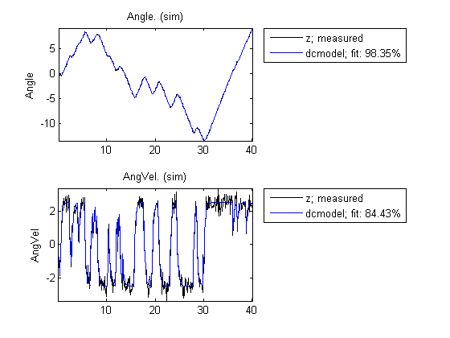
We can now, for example plot zeros and poles and their uncertainty regions. We will draw the regions corresponding to 10 standard deviations, since the model is quite accurate. Note that the pole at the origin is absolutely certain, since it is part of the model structure; the integrator from angular velocity to position.
pzmap(dcmodel,10)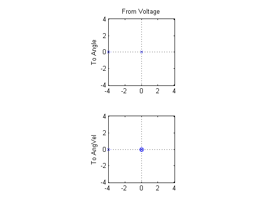
Now, we may make various modifications. The 1,2-element of the A-matrix (fixed to 1) tells us that x2 is the derivative of x1. Suppose that the sensors are not calibrated, so that there may be an unknown proportionality constant. To include the estimation of such a constant we just "let loose" A(1,2) and re-estimate:
dcmodel2 = dcmodel; dcmodel2.As(1,2) = NaN; dcmodel2 = pem(z,dcmodel2,'display','on');
Criterion: Determinant minimization
Scheme: Nonlinear least squares with automatically chosen line search method
------------------------------------------------------------------------------------------
Norm of First-order Improvement (%)
Iteration Cost step optimality Expected Achieved Bisections
------------------------------------------------------------------------------------------
0 0.00106082 - 40 0.0256 - -
1 0.00106055 0.0038 8.21 0.0256 0.0255 0
2 0.00106055 5.48e-005 0.000879 1.13e-005 1.13e-005 0
------------------------------------------------------------------------------------------
The resulting model is
dcmodel2
State-space model: dx/dt = A x(t) + B u(t) + K e(t)
y(t) = C x(t) + D u(t) + e(t)
A =
x1 x2
x1 0 0.99745
x2 0 -4.0113
B =
Voltage
x1 0
x2 1.0043
C =
x1 x2
Angle 1 0
AngVel 0 1
D =
Voltage
Angle 0
AngVel 0
K =
Angle AngVel
x1 0 0
x2 0 0
x(0) =
x1 0
x2 0
Estimated using PEM using SearchMethod = Auto from data set z
Loss function 0.00105258 and FPE 0.00106837
We find that the estimated A(1,2) is close to 1. To compare the two model we use
compare(z,dcmodel,dcmodel2)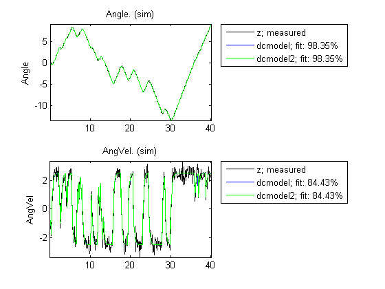
Specification of Models with Coupled Parameters Using IDGREY Objects
Suppose that we accurately know the static gain of the dc-motor (from input voltage to angular velocity, e.g. from a previous step-response experiment. If the static gain is G, and the time constant of the motor is t, then the state-space model becomes
|0 1| | 0 |
d/dt x = | |x + | | u
|0 -1/t| | G/t | |1 0|
y = | | x
|0 1|With G known, there is a dependence between the entries in the different matrices. In order to describe that, the earlier used way with "NaN" will not be sufficient. We thus have to write a MATLAB file which produces the A, B, C, D, K and X0 matrices as outputs, for each given parameter vector as input. It also takes auxiliary arguments as inputs, so that the user can change certain things in the model structure, without having to edit the file. In this case we let the known static gain G be entered as such an argument. The file that has been written has the name 'motor.m'.
type motor
function [A,B,C,D,K,X0] = motor(par,ts,aux)
%MOTOR Help file for IDDEMO, describing IDGREY models
%
% [A,B,C,D,K,X0] = MOTOR(Tau,Ts,G)
% returns the State Space matrices of the DC-motor with
% time-constant Tau
% (Tau = par) and known static gain G. The sampling interval is
% Ts.
% The conversion to a sampled model is inhibited if Ts is entered
% as zero. This means that the IDGREY property can CDMFILE cad be
% set to 'CD', which allows for easier transformations back and
% forth between discrete and continuous time representations.
%
% See also IDGREY and IDDEMO # 6.
% L. Ljung
% Copyright 1986-2007 The MathWorks, Inc.
% $Revision: 1.9.4.1 $ $Date: 2007/11/09 20:11:21 $
t = par(1);
G=aux(1);
A=[0 1;0 -1/t];
B=[0;G/t];
C=eye(2);
D=[0;0];
K=zeros(2,2);
X0=[0;0];
if ts>0 % Sample the model with sampling interval ts
s = expm([[A B]*ts; zeros(1,3)]);
A = s(1:2,1:2);
B = s(1:2,3);
end
We now create a IDGREY model object corresponding to this model structure: The assumed time constant will be
par_guess = 1;
We also give the value 0.25 to the auxiliary variable G (gain) and sampling interval.
aux = 0.25; dcmm = idgrey('motor',par_guess,'cd',aux,0);
The time constant is now estimated by
dcmm = pem(z,dcmm,'display','on'); % We have thus now estimated the time constant of the motor directly. % Its value is in good agreement with the previous estimate. dcmm
Criterion: Determinant minimization
Scheme: Nonlinear least squares with automatically chosen line search method
------------------------------------------------------------------------------------------
Norm of First-order Improvement (%)
Iteration Cost step optimality Expected Achieved Bisections
------------------------------------------------------------------------------------------
0 1.63537 - 645 142 - -
1 0.0282647 0.882 5.59e+003 142 98.3 0
2 0.0015936 0.1 4.58e+003 140 94.4 0
3 0.00106616 0.0297 285 34 33.1 0
4 0.00106501 0.0015 3.82 0.107 0.108 0
5 0.00106501 2.01e-005 0.045 1.92e-005 1.94e-005 0
------------------------------------------------------------------------------------------
IDGREY model defined by the MATLAB file motor.
State-space model: dx/dt = A x(t) + B u(t) + K e(t)
y(t) = C x(t) + D u(t) + e(t)
A =
x1 x2
x1 0 1
x2 0 -4.0057
B =
Voltage
x1 0
x2 1.0014
C =
x1 x2
Angle 1 0
AngVel 0 1
D =
Voltage
Angle 0
AngVel 0
K =
Angle AngVel
x1 0 0
x2 0 0
x(0) =
x1 0
x2 0
Estimated using PEM using SearchMethod = Auto from data set z
Loss function 0.00106235 and FPE 0.00106766
With this model we can now proceed to test various aspects as before. The syntax of all the commands is identical to the previous case. For example, we can compare the idgrey model with the other state-space model:
compare(z,dcmm,dcmodel) % % They are clearly very close.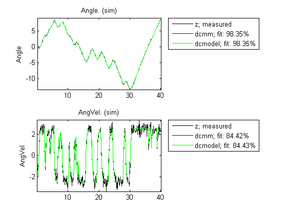
Estimating Multivariate ARX Models
The state-space part of the toolbox also handles multivariate (several outputs) ARX models. By a multivariate ARX-model we mean the following:
A(q) y(t) = B(q) u(t) + e(t)
Here A(q) is a ny | ny matrix whose entries are polynomials in the delay operator 1/q. The k-l element is denoted by:
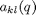
where:
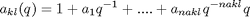
It is thus a polynomial in 1/q of degree nakl.
Similarly B(q) is a ny | nu matrix, whose kj-element is:
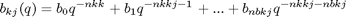
There is thus a delay of nkkj from input number j to output number k. The most common way to create those would be to use the ARX-command. The orders are specified as: nn = [na nb nk] with na being a ny-by-ny matrix whose kj-entry is nakj; nb and nk are defined similarly.
Let's test some ARX-models on the dc-data. First we could simply build a general second order model:
dcarx1 = arx(z,'na',[2,2;2,2],'nb',[2;2],'nk',[1;1]); dcarx1
Multivariable ARX model
A0*y(t)+A1*y(t-T)+ ... + An*y(t-nT) =
B0*u(t)+B1*u(t-T)+ ... +Bm*u(t-mT) + e(t)
A0:
1 0
0 1
A1:
-0.5545 -0.0355
0.0185 -0.2005
A2:
-0.4454 -0.0640
-0.0194 -0.2924
B0:
0
0
B1:
0.0042
0.0864
B2:
0.0066
0.0388
Estimated using ARX on data set z
Loss function 0.0020759 and FPE 0.00220045
Sampling interval: 0.1
The result, dcarx1, is stored as an IDARX model, and all previous commands apply. We could for example explicitly determine the ARX-polynomials by:
dcarx1.A dcarx1.B
ans(:,:,1) =
1 0
0 1
ans(:,:,2) =
-0.5545 -0.0355
0.0185 -0.2005
ans(:,:,3) =
-0.4454 -0.0640
-0.0194 -0.2924
ans(:,:,1) =
0
0
ans(:,:,2) =
0.0042
0.0864
ans(:,:,3) =
0.0066
0.0388
We could also test a structure, where we know that y1 is obtained by filtering y2 through a first order filter. (The angle is the integral of the angular velocity). We could then also postulate a first order dynamics from input to output number 2:
na = [1 1; 0 1]; nb = [0 ; 1]; nk = [1 ; 1]; dcarx2 = arx(z,[na nb nk]); dcarx2
Multivariable ARX model
A0*y(t)+A1*y(t-T)+ ... + An*y(t-nT) =
B0*u(t)+B1*u(t-T)+ ... +Bm*u(t-mT) + e(t)
A0:
1 0
0 1
A1:
-0.9992 -0.0960
0 -0.6254
B0:
0
0
B1:
0
0.0897
Estimated using ARX on data set z
Loss function 0.00338435 and FPE 0.00345204
Sampling interval: 0.1
To compare the different models obtained we use
compare(z,dcmodel,dcmm,dcarx2)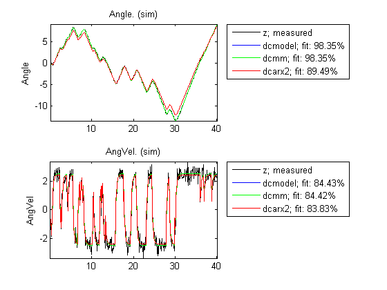
Finally, we could compare the bodeplots obtained from the input to output one for the different models by using bode: First output:
bode(dcmodel(1,1),'r',dcmm(1,1),'b',dcarx2(1,1),'g')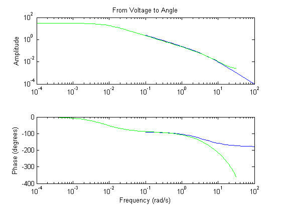
Second output:
bode(dcmodel(2,1),'r',dcmm(2,1),'b',dcarx2(2,1),'g')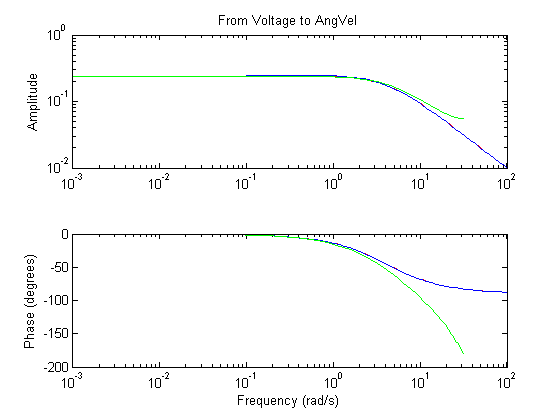
The two first models are more or less in exact agreement. The ARX-models are not so good, due to the bias caused by the non-white equation error noise. (We had white measurement noise in the simulations).
Conclusions
Estimation of models with pre-selected structures can be performed using System Identification toolbox. In state-space form, parameters may be fixed to their known values using structure matrices of IDSS objects. If relationship between parameters or other constraints need to be specified, IDGREY objects may be used. IDGREY models evaluate a user-specified MATLAB file for estimating state-space system parameters. Multi-variate ARX models offer another option for quickly estimating multi-output models with user-specified structure.
For low order continuous-time transfer functions, IDPROC objects may be used. These objects let you create simple "process" models with the option of fixing some parameters to their known values. Such models are popular in process industry. To learn more about these models in System Identification Toolbox, see the demo: "Building and Estimating Process Models Using System Identification Toolbox".
Additional Information
For more information on identification of dynamic systems with System Identification Toolbox visit the System Identification Toolbox product information page.